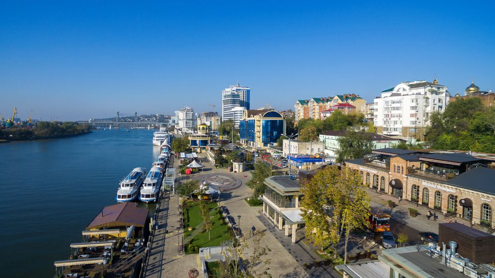

Интересные достопримечательности города Ростов-на-Дону!
В южной столице России немало интересных мест. Красивые виды на Дон, забавные контактные скульптуры, старинные
купеческие особняки и зелёные парки — чтобы увидеть всё, потребуется не один день. Я составила список 3 мест
Ростова-на-Дону, которые мне понравились больше всего.
Набережная Дона
Правый берег Дона — любимое место прогулок у ростовчан. Набережная названа в честь адмирала российского флота
Фёдора Ушакова. Вдоль берега проложены пешеходные дорожки, по которым приятно ходить и любоваться гладью Дона.
По пути встречаются контактные скульптуры, герои произведений Шолохова: Григорий и Аксинья в лодке, Дед Щукарь
и
Нахалёнок, а также местные персонажи — «Ростовчанка», «Дон-батюшка», «Рыбак». На набережной проводятся разные
праздники, в том числе ежегодный фестиваль реки Дон. С причалов регулярно отправляются прогулочные катера.

Кафедральный собор Рождества пресвятой Богородицы
Церковь находится рядом с Центральным рынком на Соборной площади, где стоит памятник покровителю города
Дмитрию
Ростовскому. Первый храм на этом месте открыт в 1781 году, современное здание в русско-византийском стиле
построили
в 1860 году по проекту К. Тона, автора Храма Христа Спасителя в Москве. Недавно закончили реставрацию.
Верующие
приезжают сюда, чтобы поклониться святыням — Донской иконе Божией матери и части пояса Пресвятой Богородицы.
На
подворье также расположены требный храм Иоанна Предтечи и колокольня 1875 года постройки, в ней находится храм
Николая Чудотворца.
Улица Пушкинская
Улица названа в честь Пушкина неслучайно: поэт посещал Ростов несколько раз. На улице можно встретить памятник
поэту и скульптурные композиции, посвященные его произведениям. Вдоль Пушкинской также расположены старинные
особняки и купеческие дома. Среди них особняк семьи Шпильрейн — дом № 83. Сабина Шпильрейн была пациенткой и
возлюбленной Карла Юнга, а впоследствии — признанным психоаналитиком. На Пушкинской, 148 жил наследник купца
Елпидифора Парамонов Николай, тоже известный предприниматель и благотворитель. В доме с колоннами и парадной
лестницей сейчас располагается библиотека Южного федерального университета. Особняком стоит на Пушкинской
монументальное здание Донской государственной публичной библиотеки (дом № 175а), а рядом с ней —
Благовещенский
греческий храм, созданный по инициативе греческой диаспоры Ростова.